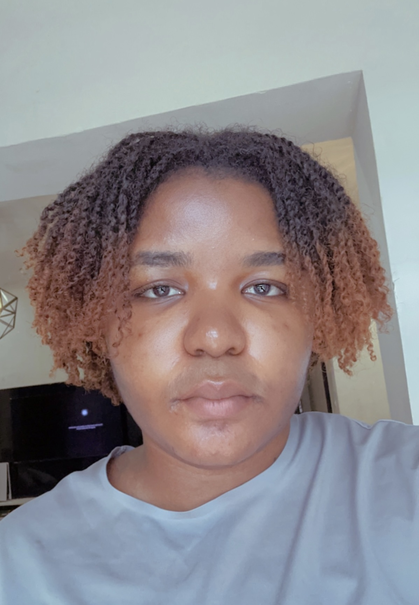

Contact Me
Hobbies
Onma Storm

Summary
I am a Software Engineering student highly committed to building great projects by merging both frontend and backend developments alog with Data Science and Machine Learning. I am open to internships and work, as they would be an opportunity for me to build on existing skills and gain experience.
Education
- Federal Government College Otobi - WASSCE
- Benue State University - Medicine and Surgery
- Baze University - Software Engineering
Skills
- Python
- HTML and CSS
- Javascript
- Java
- SQL
Awards
- Best Graduating Student Science and Technology - Federal Government College Otobi